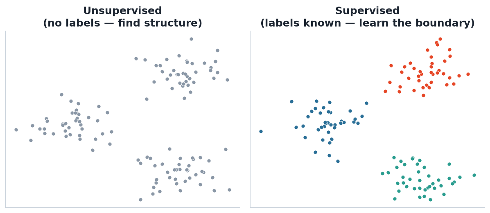
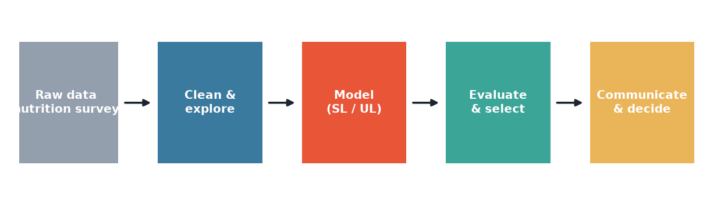

What this unit is about, how machines learn from data, and the interdisciplinary nutrition project.
Build algorithms that learn patterns from data to make predictions or discover structure — without being explicitly programmed for the task.
Classical statistics asks “is this effect real?” (inference). ML asks “how well can I predict the next case?”. This unit lives at their intersection.

Left: unsupervised — we only see the points and must find the groups. Right: supervised — each point carries a known label and we learn the rule.
Is there a target variable Y?
✔ Yes → supervised (regression if Y is numeric, classification if categorical).
✘ No → unsupervised (clustering, dimension reduction).
| Unsupervised (Weeks 1–3) | Supervised (Weeks 4–7) |
|---|---|
| k-means, model-based & hierarchical clustering | Logistic & penalised logistic regression |
| Principal component analysis | Discriminant analysis, k-NN |
| Dimension reduction | Trees, random forests |
| Graphical / log-linear models | Neural networks, support vector machines |

You will iterate this loop for your nutrition project — real projects cycle back often.
Statistics/Data Science students team with Nutrition (Metabolic Cybernetics) students to answer a real question from a nutrition & metabolomics data set.
You bring the statistical machine learning. They bring the domain question and interpretation. Neither succeeds alone — this is interdisciplinary practice (GQ7).
| Component | Weight | When |
|---|---|---|
| Final written exam | 35% | Exam period |
| Disciplinary assignment (individual) | 15% | Week 11 |
| Major project — presentation | 15% | Week 12 |
| Major project — manuscript | 25% | Week 13 |
| Contribution / reflection / peer review | 10% | Week 13 |
For each scenario, decide supervised or unsupervised, and name the sub-type (regression / classification / clustering / dimension reduction):